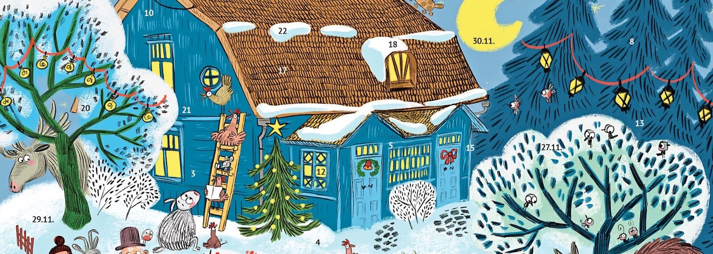

Varainhankinta
Adventtikalenteri 2026
Partiolaisten adventtikalenterien myynti alkaa 15.10.!
Ohjeet myyjille
Lippukuntamme hankkii varoja myymällä partiolaisten adventtikalenteria. Adventtikalentereiden myynti on lippukuntamme ehdottomasti tärkein varainhankintamuoto.
Kalentereiden jako
Partiokalenterit jaetaan 19.10. partioillassa. Tavoitteenamme on hankkia varoja, joiden turvin voimme pitää ilmaiset kevät- ja syysretket myös ensi vuonna. Tämän lisäksi hankimme lippukunnalle yhteisiä varusteita, kuten esimerkiksi telttoja ja retkitarvikkeita. Vuoden aikana osallistumme lukuisiin tapahtumiin eri ikäryhmissä!
Partiolainen on adventtikalenterin paras myyjä. Pyydämme teitä osallistumaan yhteiseen varainhankintaan ja tavoitteeksi olemme asettaneet 12 kalenterin myymisen per partiolainen. Vanhemmat voivat mielellään mainostaa kalentereita omille työkavereilleen ja tutuille ja auttaa lasta tällä tavoin. Lisää kalentereita saa maanantaisin partioilloissa ryhmänohjaajilta.
Tonttumerkit
Viime vuonna Espoon Leppäversot saivat kaupaksi 506 kalenteria. Upea suoritus! Vaikka adventtikalentereiden myynti yhteisen hyvän eteen opettaa partiolaisille tärkeitä taitoja, voi itse myyntitilanne olla jännittävä varsinkin ensimmäisillä kerroilla.
Myynti
Adventtikalentereiden myyjät tunnistetaan myyntipaikalla partiohuivista. Mikäli kalentereita myydään ulkona, on tärkeää myös pukeutua lämpimästi.
Adventtikalentereiden myyminen tapahtuu nuorimpien osalta pareittain tai ryhmissä. Tutun naapuruston voi toki kiertää myös yksin. Ovelta ovelle -myynnissä turvallisuus on tärkeää:
- On hyvä kunnioittaa ihmisten iltarauhaa.
- Myyjät liikkuvat aina pareittain tai isommassa ryhmässä.
Käteinen ja MobilePay
On hyvä ohjeistaa rahan käsittelyä. Myyjän olisi hyvä tietää ainakin se, miten annetaan takaisin mistäkin rahasta. Myös tänä vuonna MobilePay-maksaminen on mahdollista.
MobilePay-maksut menevät automaattisesti lippukunnan tilille. Kalenterin myyntihinta on tänä vuonna 13 € (huomioi korotus viime vuodesta), josta lippukuntamme saa 5,59 €. Loppuraha menee Pääkaupunkiseudun partiolaisille ja Suomen Partiolaisille. Näillä rahoitetaan esimerkiksi suurleirejä.
- Hinta
- 13 € / kalenteri
- MobilePay-lyhytnumero
- 46925
Ohessa lippukunnan MobilePay:n QR-koodi. Se kannattaa tallentaa myyjälle mukaan vaikkapa puhelimen valokuviin. Jos QR-koodi ei toimi, niin voi käyttää MobilePay-lyhytnumeroa: 46925. Ostaja voi kirjoittaa viestikenttään myös myyjän nimen seurantaa helpottamaan. Tämä ei kuitenkaan ole pakollista.
Laita muistiin, kuinka monta kalenteria maksettiin käteisellä ja kuinka monta MobilePay:llä.
Verkkokauppa
Meidän lippukunnalla on myös oma kalentereiden verkkokauppa (myyntilinkki), jonka avulla kalenterin voi ostaa suoraan verkosta:
adventtikalenteri.fi/osta-partiolaisten-adventtikalenteri/lippukunta/espoon-leppaversot-ry
Myymättömien kalentereiden palauttaminen
Ymmärrämme, että aina ei myynti kulje, vaikka kuinka olisi hiotut myyntistrategiat ja tsemppihenki päällä. Lisäksi muut lippukunnat ovat myös myymässä kalentereita, joten kannattaa olla ajoissa liikkeellä. Myymättömät kalenterit pitää palauttaa viimeistään ma 30.11. partioiltaan! Kalentereita ei voi palauttaa enää joulujuhlassa 7.12.
On ehdottoman tärkeää, että myymättömät kalenterit palautetaan, jotta voimme palauttaa ne takaisin partiopiiriin. Muuten joudumme maksamaan jokaisesta myymättömästä kalenterista. Lisäohjeita voi kysellä ryhmänohjaajilta.
Rahojen tilittäminen lippukunnalle
Kun myyntiurakka on ohi ja myymättömät kalenterit palautettu, niin kalentereiden tilitys hoidetaan seuraavasti suoraan lippukunnan tilille:
- Tilinumero
- FI37 5789 8520 0240 91
- Saaja
- Partiolippukunta Espoon Leppäversot Ry
- Eräpäivä
- ma 30.11.2026
- Maksu
- 13 EUR / käteisellä maksettu kalenteri
- Viestikenttään
-
- Lapsen nimi,
- ikäryhmä (sudenpentu, seikkailija, tarpoja, samoaja tai aikuinen) ja
- tieto myydyistä kalentereista (käteinen, mobilepay).
Esimerkki: Liisa L on myynyt 12 kalenteria, joista 8 käteisellä ja 4 MobilePay:llä. Viestikenttään:
Esimerkissä maksetaan 104 (8 × 13 eur) euroa, kahdeksasta käteisellä maksetusta kalenterista. MobilePay-maksut näkyvät jo suoraan lippukunnan tilillä.
Huom! Jos olet myynyt kaikki kalenterit pelkästään MobilePay:llä, niin kerrothan siitä ryhmänohjaajalle.